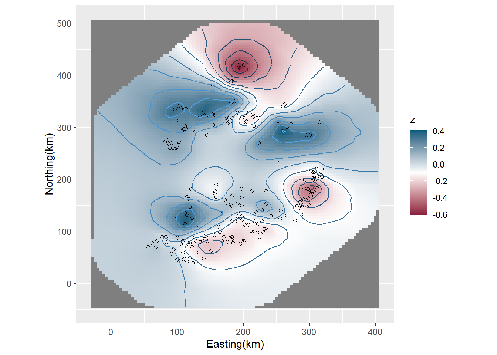
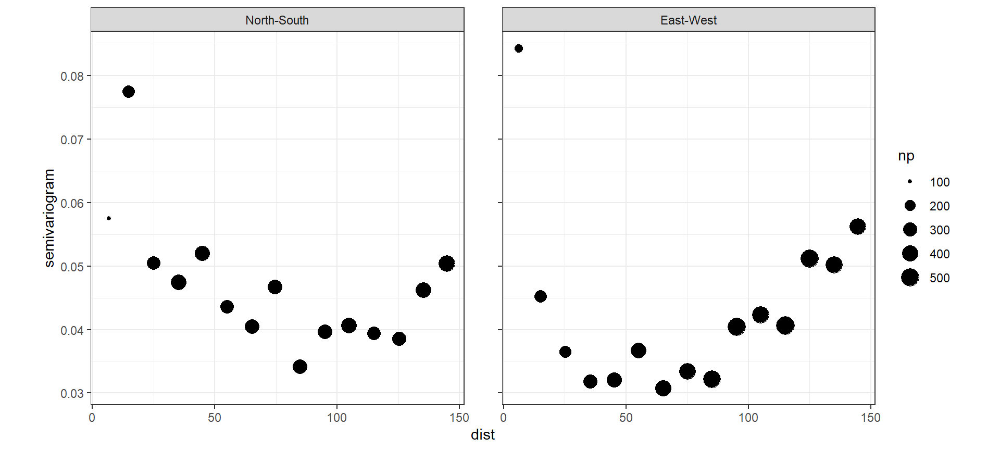

11 Linear regression model with spatial dependency for the Irish pH data
本章では、前章で学んだ手法を実際の空間データに適用して分析を行う。
11.1 Introduction
用いるのは第1章で用いた、アイルランドの257の川において、川のpHがSDI(Sodium Dominance Index; 陽イオン中のナトリウムイオン)と関連しているかを、緯度(Altitude)やその場所が森林化されているか(Forested)も考慮したうえで調べた Cruikshanks et al. (2006) のデータである。第1章では、地理的に近いデータほど類似しており、疑似反復の問題を避けるためには空間的相関を考慮したモデルを適用する必要があることを確認した。
11.2 Model formulation
まず、空間的な相関を考慮しないモデルとして以下のモデルを考える。2次の交互作用項と3次の交互作用項をすべて含んでいる。
\[ \begin{aligned} &pH_i \sim N(\mu_i, \sigma^2)\\ &E(pH_i) = \mu_i \; and \; var(pH_i) = \sigma^2\\ &\mu_i = \alpha + \beta_1 \times SDI_i + \beta_2 \times logAltitude_i + \beta_3 + Forested_i \\ & \;\;\;\;\;\;\;\; + \beta_4 \times SDI_i \times LogAltitude_i + \beta_5 \times SDI_i \times Forested_i + \\ & \;\;\;\;\;\;\;\; + \beta_6 \times LogAltitude_i \times Forested_i \\ & \;\;\;\;\;\;\;\; + \beta_7 \times LogAltitude_i \times Forested_i \end{aligned} \]
11.3 Linear regression results
それでは、INLAで上記のモデルを実行する。
iph %>%
mutate(logAlt = log10(Altitude)) %>%
mutate(fForested = fct_relevel(fForested,"yes","no"))-> iph
m12_1 <- inla(pH ~ logAlt*SDI*fForested,
family = "gaussian",
control.predictor = list(compute = TRUE),
data = iph)結果は以下の通り。3-way interactionは95%確信区間に0を含んでおり、
ハイパーパラメータの要約統計量は以下の通り。ここでは、\(\sigma\)について情報を算出した。
tau <- m12_1$marginals.hyperpar$`Precision for the Gaussian observations`
sigma <- inla.tmarginal(function(x) 1/sqrt(x), tau)
sigma_summary <- inla.qmarginal(p = c(0.025, 0.5, 0.975), sigma) %>% data.frame() %>% t()
colnames(sigma_summary) <- c("0.025quant", "0.5quant", "0.975quant")
sigma_summary## 0.025quant 0.5quant 0.975quant
## . 0.3408095 0.3743001 0.413620911.4 Model validation
続いて、モデル診断を行う。
まず、残差と予測値、残差と共変量の関係を調べたら問題はなかった。これは第1と一緒である。
fitted <- m12_1$summary.fitted.values$mean
resid <- iph$pH - fitted
data.frame(fitted = fitted,
resid = resid) %>%
ggplot(aes(x= fitted, y = resid))+
geom_point(shape = 1)+
geom_hline(yintercept = 0, linetype = "dashed")+
theme_bw()+
theme(aspect.ratio = 1)+
labs(x= "Fitted values", y = "Residuals") -> p1
data.frame(SDI = iph$SDI,
resid = resid) %>%
ggplot(aes(x= SDI, y = resid))+
geom_point(shape = 1)+
geom_hline(yintercept = 0, linetype = "dashed")+
theme_bw()+
theme(aspect.ratio = 1)+
labs(x= "SDI", y = "Residuals") -> p2
data.frame(SDI = iph$logAlt,
resid = resid) %>%
ggplot(aes(x= SDI, y = resid))+
geom_point(shape = 1)+
geom_hline(yintercept = 0, linetype = "dashed")+
theme_bw()+
theme(aspect.ratio = 1)+
labs(x= "Log(Altitude)", y = "Residuals") -> p3
data.frame(forested = iph$fForested,
resid = resid) %>%
ggplot(aes(x= forested, y = resid))+
geom_boxplot()+
theme_bw()+
theme(aspect.ratio = 1)+
labs(x= "Forested", y = "Residuals") -> p4
(p1 + p2)/(p3+p4)
続いて、バリオグラムを確認する。第1章で確認したときと同様、やはり空間的な相関が存在することがわかる。
vario_12_1 <- data.frame(resid = resid,
Easting.km = iph$Easting/1000,
Northing.km = iph$Northing/1000)
sp::coordinates(vario_12_1) <- c("Easting.km", "Northing.km")
vario_12_1 %>%
variogram(resid ~ Easting.km + Northing.km, data = .,
## 0が南北方向、90が東西方向
alpha = c(0, 90),
cressie = TRUE,
cutoff = 150,
width = 10) %>%
ggplot(aes(x = dist, y = gamma))+
geom_point(aes(size = np))+
theme_bw()+
theme(aspect.ratio = 1)+
facet_rep_wrap(~ dir.hor,
repeat.tick.labels = TRUE,
labeller = as_labeller(c("0" = "North-South",
"90" = "East-West")),
scales = "free")+
labs(y = "semivariogram")
11.5 Adding spatial correlation to the model
それでは、空間的な相関を考慮したモデルを実行する。モデル式は以下の通り。先ほどとの唯一の違いは\(u_i\)が入っている点である。まず、\(u_i\)は正規分布に従っており、ガウス場である。続いて、その分散共分散行列はマルコフ過程に従う(隣り合う観測値のみが相関する)。このとき、\(u_i\)はガウスマルコフランダム場(GMRF)である。\(\bf{\Sigma}\)はMatern関数を用いて表現される。
\[ \begin{aligned} &pH_i \sim N(\mu_i, \sigma^2)\\ &E(pH_i) = \mu_i \; and \; var(pH_i) = \sigma^2\\ &\mu_i = \alpha + \beta_1 \times SDI_i + \beta_2 \times logAltitude_i + \beta_3 + Forested_i \\ & \;\;\;\;\;\;\;\; + \beta_4 \times SDI_i \times LogAltitude_i + \beta_5 \times SDI_i \times Forested_i + \\ & \;\;\;\;\;\;\;\; + \beta_6 \times LogAltitude_i \times Forested_i \\ & \;\;\;\;\;\;\;\; + \beta_7 \times LogAltitude_i \times Forested_i + u_i\\ &u_i \sim GMRF(0,\bf{\Sigma}) \end{aligned} \]
Matern関数のパラメータは、確率偏微分方程式(SPDE)を解くことで求められる。これを解くため、サンプリング空間に多くの三角形から成るメッシュが作られる。最後に、有限要素アプローチ(finite element approach)で各頂点について\(w_k\)が得られ、これをもとに\(u_i\)の事後分布が得られる。
INLAで上記のようなことを行うには、以下のステップを踏む。
- メッシュを作成する。
- 各頂点の重みづけ因子\(a_{ik}\)を定義する。
- 確率偏微分方程式(SPDE)を定義する。
- ランダム場を定義する。
- メッシュのどの点で応答変数と共変量を得たか、またランダム効果などがあればメッシュのどの点にあるかを
INLAに伝える。
- モデル式を決める。
INLAで空間モデルを実行する。
11.6 Defining the mesh for the Irish pH data
ここでは、アイルランドの河川データに対してメッシュを作成する。まず、データの座標をkmに直す。
2つの場所間の距離\(||s_i - s_j||\)のヒストグラムと、距離の累積割合を示したのが図11.1である。図11.1Bは、50%以上の観測値が200km以内でサンプリングされたことを示している。
dist_iph <- dist(cbind(iph$Easting.km, iph$Northing.km)) %>% as.matrix()
diag(dist_iph) <- NA
dist_iph.vec <- as.vector(dist_iph) %>% na.omit()
data.frame(dist = dist_iph.vec) %>%
ggplot(aes(x = dist))+
geom_histogram(alpha = 0,
color = "black",
binwidth = 8)+
theme_bw()+
theme(aspect.ratio = 1)+
labs(title = "A", x = "Distances between sites",
y = "Frequency") -> p1
data.frame(x = sort(dist_iph.vec),
y = 1:length(dist_iph.vec)/length(dist_iph.vec)) %>%
ggplot(aes(x =x, y = y))+
geom_line()+
theme_bw()+
theme(aspect.ratio = 1)+
labs(title = "B", x = "Distances between sites",
y = "Cumlutive proportion") -> p2
p1 + p2
図11.1: A: Histogram of distances between sites in the simulation study. B: Cumulative proportion versus distance between sites.
メッシュは以下のように作成する。max.edgeはメッシュの内側と外側の辺の最大の長さをそれぞれ指定する。これが小さいほどメッシュ内の三角形の数は多くなる。作成したメッシュは図11.2の1行目の一番左である。
mesh12_1 <- inla.mesh.2d(loc = cbind(iph$Easting.km, iph$Northing.km),
max.edge = c(10,10),
cutoff = 0)メッシュは太い線で内側と外側に分けられている(図11.2)。メッシュは\(w_k\)を計算するのに用いられ、アルゴリズムはその過程で近傍の情報を利用する。もし三角形が調査地の端に位置しているとすると、近傍の三角形が少なくなるので頂点の\(w_k\)のばらつきが大きくなってしまう可能性がある。これを避けるため、メッシュの外側のエリアが使われる。このエリアは2つの太い線に囲われる領域で、サンプリングポイントが存在しない(図11.2)。外側のエリアは内側のエリアに先ほどの問題が生じないようにする緩衝領域だと考えることができる。offsetというオプションを用いると、外側と内側のエリアの範囲を調整することができる。一般的に、外側のエリアはレンジ(空間相関がなくなる距離)よりも広いことが推奨されている。
cutoffオプションは、その距離より近いサンプリングポイント同士が1つの頂点に入れ替えられることを示す。以下、max.edgeとcutoffに様々な値を割り当てたメッシュを作成し、図11.2に示した。
Loc <- cbind(iph$Easting.km, iph$Northing.km)
mesh12_2 <- inla.mesh.2d(loc = Loc,
max.edge = c(10,10),
cutoff = 10)
mesh12_3 <- inla.mesh.2d(loc = Loc,
max.edge = c(50,50))
mesh12_4 <- inla.mesh.2d(loc = Loc,
max.edge = c(75,75),
cutoff = 1)
mesh12_5 <- inla.mesh.2d(loc = Loc,
max.edge = c(25,50),
cutoff = 1)
mesh12_6 <- inla.mesh.2d(loc = Loc,
max.edge = c(50,80),
cutoff = 1)
mesh12_7 <- inla.mesh.2d(loc = Loc,
max.edge = c(100,120),
cutoff = 1)
mesh12_8 <- inla.mesh.2d(loc = Loc,
max.edge = c(150,150),
cutoff = 1)
par(mfrow=c(3,3), mar=c(1,1,1,1))
for(i in 1:8){
plot(get(paste('mesh12_', i, sep = '')), main = "",asp=1)
points(Loc, col = 2, pch = 16, cex = 1)
}
図11.2: Various meshes. Top row from left to right: meshes 1 to 3. Middle row from left to right: meshes 4 to 6. Bottom row from left to right: meshes 7 to 9.
各メッシュの頂点の数は以下の通り。
## [1] 4982 4856 649 523 737 528 515 515他のアプローチとしては、すべてのサンプリングポイントが境界領域内にあるように境界領域を指定することである。
bound <- inla.nonconvex.hull(Loc)
mesh12_9 <- inla.mesh.2d(loc = Loc,
boundary = bound,
max.edge = 50,
cutoff = 5)
plot(mesh12_9, main = "", asp=1)
points(Loc, col = 2, pch = 16, cex = 1)
メッシュの選択には、確率偏微分方程式(SPDE)の近似の精度と計算時間のトレードオフがある。700-800の頂点しかない場合は計算が数秒で終わるが、4000-5000個あると数分かかる。一般的にはまず700-800の頂点を持つメッシュで最初の分析を行い、最終的な結果はより多くの頂点を持つメッシュで示す。ひとまず、ここでは737個の頂点があるメッシュmesh12_5を用いて分析する。

11.7 Define the weight factor aik
メッシュmesh12_5は737個の頂点があるので、分析の結果737個の\(w_k\)(\(w_1,w_2,\dots, w_{731}\))の事後分布を得る。また、データは210個あるので、\(u_i\)(\(u_1, u_2, \dots. u_{210}\))も201個ある。メッシュの種類によって各サンプリングポイントはメッシュの三角形内か頂点に配置されるが、今回選択したメッシュ(mesh12_5)では頂点にある。つまり今回の場合は\(s_i\)がk番目の頂点にあるとき、\(u_i\)は\(w_k\)と一致する。一方で、もし\(s_i\)が三角形内にあるのであれば、\(u_i\)はその三角形の頂点\(w_k\)の重みづけ平均になる(第10章、式(10.7)参照)。
\[ u_i = \Sigma_{k=1}^{731} a_{ik} \times w_k \tag{11.1} \]
\(a_{ik}\)は重みづけ関数と呼ばれる。Rでは以下のように確認できる。例えば、\(a_{1k}\)は以下のようになる。
## [1] 0 0 0 0 0 0 0 0 0 0 0 0 0 0 0 0 0 0 0 0 0 0 0 0 0 0 0 0 0 0 0 0 0 0 0 0 0
## [38] 0 0 0 0 0 0 0 0 0 0 0 0 0 0 0 0 0 0 0 0 0 0 0 0 0 0 0 0 0 0 0 0 1 0 0 0 0
## [75] 0 0 0 0 0 0 0 0 0 0 0 0 0 0 0 0 0 0 0 0 0 0 0 0 0 0 0 0 0 0 0 0 0 0 0 0 0
## [112] 0 0 0 0 0 0 0 0 0 0 0 0 0 0 0 0 0 0 0 0 0 0 0 0 0 0 0 0 0 0 0 0 0 0 0 0 0
## [149] 0 0 0 0 0 0 0 0 0 0 0 0 0 0 0 0 0 0 0 0 0 0 0 0 0 0 0 0 0 0 0 0 0 0 0 0 0
## [186] 0 0 0 0 0 0 0 0 0 0 0 0 0 0 0 0 0 0 0 0 0 0 0 0 0 0 0 0 0 0 0 0 0 0 0 0 0
## [223] 0 0 0 0 0 0 0 0 0 0 0 0 0 0 0 0 0 0 0 0 0 0 0 0 0 0 0 0 0 0 0 0 0 0 0 0 0
## [260] 0 0 0 0 0 0 0 0 0 0 0 0 0 0 0 0 0 0 0 0 0 0 0 0 0 0 0 0 0 0 0 0 0 0 0 0 0
## [297] 0 0 0 0 0 0 0 0 0 0 0 0 0 0 0 0 0 0 0 0 0 0 0 0 0 0 0 0 0 0 0 0 0 0 0 0 0
## [334] 0 0 0 0 0 0 0 0 0 0 0 0 0 0 0 0 0 0 0 0 0 0 0 0 0 0 0 0 0 0 0 0 0 0 0 0 0
## [371] 0 0 0 0 0 0 0 0 0 0 0 0 0 0 0 0 0 0 0 0 0 0 0 0 0 0 0 0 0 0 0 0 0 0 0 0 0
## [408] 0 0 0 0 0 0 0 0 0 0 0 0 0 0 0 0 0 0 0 0 0 0 0 0 0 0 0 0 0 0 0 0 0 0 0 0 0
## [445] 0 0 0 0 0 0 0 0 0 0 0 0 0 0 0 0 0 0 0 0 0 0 0 0 0 0 0 0 0 0 0 0 0 0 0 0 0
## [482] 0 0 0 0 0 0 0 0 0 0 0 0 0 0 0 0 0 0 0 0 0 0 0 0 0 0 0 0 0 0 0 0 0 0 0 0 0
## [519] 0 0 0 0 0 0 0 0 0 0 0 0 0 0 0 0 0 0 0 0 0 0 0 0 0 0 0 0 0 0 0 0 0 0 0 0 0
## [556] 0 0 0 0 0 0 0 0 0 0 0 0 0 0 0 0 0 0 0 0 0 0 0 0 0 0 0 0 0 0 0 0 0 0 0 0 0
## [593] 0 0 0 0 0 0 0 0 0 0 0 0 0 0 0 0 0 0 0 0 0 0 0 0 0 0 0 0 0 0 0 0 0 0 0 0 0
## [630] 0 0 0 0 0 0 0 0 0 0 0 0 0 0 0 0 0 0 0 0 0 0 0 0 0 0 0 0 0 0 0 0 0 0 0 0 0
## [667] 0 0 0 0 0 0 0 0 0 0 0 0 0 0 0 0 0 0 0 0 0 0 0 0 0 0 0 0 0 0 0 0 0 0 0 0 0
## [704] 0 0 0 0 0 0 0 0 0 0 0 0 0 0 0 0 0 0 0 0 0 0 0 0 0 0 0 0 0 0 0 0 0 011.8 Define the SPDE
空間相関を持つランダム切片\(u_i\)で、その分散共分散行列がMatern関数で表現されるとき、SPDEは以下のように定義できる。alpha = 2はMatern関数のパラメータ\(\nu\)が1であることを示す(式(10.6)を参照)。
11.9 Define the spatial field
続いて、ランダム切片の行列\(\bf{u}\)を求めるためのリストを作成する。\(\bf{u}\)は\(\bf{A}\)と\(\bf{w}\)を以下のように定義するとき、\(\bf{u} = \bf{A} \times \bf{w}\)と書ける。\(\bf{w}\)はINLAで推定する必要がある。
\[ \begin{aligned} &\bf{A} = \begin{pmatrix} a_{1,1} & a_{1,2} & \cdots & a_{1,737} \\ \vdots & \ddots & & \vdots \\ a_{210,1} & a_{210,2} & \cdots & a_{210,737} \end{pmatrix} \\ &\bf{w} = (w_1, w_2, \dots, w_{737}) \end{aligned} \]
\(\bf{w}\)はINLAで推定する必要がある。これは以下のようにできる。w.index中のwは1から737の数字を含む。w.groupとw.replについては時空間モデルを実行するときに解説する。
w.index <- inla.spde.make.index(
name = 'w',
n.spde = spde$n.spde,
n.group = 1,
n.repl = 1)
str(w.index)## List of 3
## $ w : int [1:737] 1 2 3 4 5 6 7 8 9 10 ...
## $ w.group: int [1:737] 1 1 1 1 1 1 1 1 1 1 ...
## $ w.repl : int [1:737] 1 1 1 1 1 1 1 1 1 1 ...11.10 Define the stack
続いて、メッシュのどの点で応答変数と共変量を得たかをINLAに伝える必要がある。Rでは、inla.stack関数を用いてこれを行う。これについて理解するため、まずモデルをマトリックス形式で書く。
\[ \mu_i = \alpha + \Sigma_{j = 1}^7 \beta_j X_{ij} + u_i \]
\(X_{ij}\)は交互作用項を含む説明変数(\(SDI_i,LogAltitude_i, \dots, SDI_i \times LogAltitude_i \times Forested_i\))を含む。また、式(11.1)よりこの式は以下のように変形できる。
\[ \mu_i = \alpha + \Sigma_{j = 1}^7 \beta_j X_{ij} + \Sigma_{k=1}^{731} a_{ik} \times w_k \]
行列式で書くと以下のように書ける。
\[
\bf{X} = 1 \times \alpha + \bf{X \times \beta} + \bf{A \times w} \tag{11.2}
\]
ハイパーパラメータはpHが得られる正規分布の標準偏差\(\sigma\)、Matern関数の\(\kappa\)と\(u_i\)の分散共分散行列の\(\sigma_u\)、そして\(\bf{w}\)である。式(11.2)を実行するためには、INLAにinla.stack関数で3つの要素を与える必要がある。
一つ目は共変量を含む行列\(\bf{X}\)で、以下のように作成する。
Xm <- model.matrix(~ logAlt * SDI * fForested,
data = iph)
X <- data.frame(Alt = Xm[,2],
SDI = Xm[,3],
fFor = Xm[,4],
Alt.SDI = Xm[,5],
Alt.fFor = Xm[,6],
SDI.fFor = Xm[,7],
Alt.SDI.fFor = Xm[,8])それでは、inla.stack関数でINLAに情報を与える。これで作られたオブジェクトは”stack”といわれる。Aのリストはガウス場への射影行列で、effectsの各要素に対応している。
11.11 Define the formula for the spatial model
それでは、以下で空間相関のあるモデルとないモデルをフィットする。煩雑になるので、モデル式はあらかじめ作っておく。
11.12 Execute the spatial model in R
それでは、モデルを実行する。
m12_2a <- inla(f2a,
family = "gaussian",
data = inla.stack.data(StackFit),
control.compute = list(dic = TRUE,
waic = TRUE),
control.predictor = list(A = inla.stack.A(StackFit)))
m12_2b <- inla(f2b,
family = "gaussian",
data = inla.stack.data(StackFit),
control.compute = list(dic = TRUE,
waic = TRUE),
control.predictor = list(A = inla.stack.A(StackFit)))DICとWAICを用いてモデル比較を行うと、空間相関を考慮した方がはるかにいいことが分かる。
waic12_2 <- c(m12_2a$waic$waic, m12_2b$waic$waic)
dic12_2 <- c(m12_2a$dic$dic, m12_2b$dic$dic)
modelcomp12_2 <- cbind(waic12_2, dic12_2)
rownames(modelcomp12_2) <- c("Gaussian lm", "Gaussian lm + SPDE")
modelcomp12_2## waic12_2 dic12_2
## Gaussian lm 196.9916 194.5744
## Gaussian lm + SPDE 127.7375 124.291211.13 Results
ハイパーパラメータ以外の結果は以下の通り。
m12_2a$summary.fixed[,c("mean","sd","0.025quant","0.975quant")] %>%
mutate_if(is.numeric, ~round(.,3)) %>%
bind_cols(m12_2b$summary.fixed[,c("mean","sd","0.025quant","0.975quant")] %>%
mutate_if(is.numeric, ~round(.,3)) %>%
rename(" mean" = 1, " sd" = 2, " 0.025quant" = 3, " 0.975quanr" = 4)) %>%
kbl(align = "lcccccccc") %>%
add_header_above(c("", "空間相関なし" = 4, "空間相関有り" = 4)) | mean | sd | 0.025quant | 0.975quant | mean | sd | 0.025quant | 0.975quanr | |
|---|---|---|---|---|---|---|---|---|
| Intercept | 8.247 | 0.764 | 6.747 | 9.748 | 8.928 | 0.706 | 7.541 | 10.312 |
| Alt | 0.108 | 0.390 | -0.658 | 0.873 | -0.245 | 0.350 | -0.932 | 0.443 |
| SDI | -0.028 | 0.017 | -0.062 | 0.006 | -0.044 | 0.016 | -0.076 | -0.012 |
| fFor | 1.790 | 2.062 | -2.259 | 5.839 | 0.852 | 1.775 | -2.633 | 4.336 |
| Alt.SDI | 0.002 | 0.009 | -0.015 | 0.019 | 0.010 | 0.008 | -0.005 | 0.026 |
| Alt.fFor | -0.883 | 1.008 | -2.862 | 1.096 | -0.335 | 0.873 | -2.048 | 1.379 |
| SDI.fFor | -0.008 | 0.037 | -0.081 | 0.064 | 0.006 | 0.032 | -0.057 | 0.068 |
| Alt.SDI.fFor | 0.004 | 0.018 | -0.032 | 0.039 | -0.005 | 0.015 | -0.035 | 0.025 |
事後平均と95%確信区間を図示すると以下のようになる。そこまで大きい違いはないので、空間的相関を表すランダム効果の効果はそこまで大きくないのかもしれない。
m12_2a$summary.fixed[,c("mean","0.025quant","0.975quant")] %>%
mutate(model = "m12_2a") %>%
rownames_as_column(var = "parameter") %>%
bind_rows(m12_2b$summary.fixed[,c("mean","0.025quant","0.975quant")] %>%
mutate(model = "m12_2b") %>%
rownames_as_column(var = "parameter")) %>%
ggplot(aes(x = model, y = mean))+
geom_errorbar(aes(ymin = `0.025quant`, ymax = `0.975quant`),
width = 0.2)+
geom_point()+
geom_hline(yintercept= 0,
linetype = "dashed")+
facet_rep_wrap(~parameter, repeat.tick.labels = TRUE,
scales = "free")
続いて、ハイパーパラメータの結果を見ていく。推定の結果、\(\kappa\)と\(\sigma_u\)の事後平均はそれぞれ0.0319と0.2804であることが分かった。レンジの事後平均は105.61である。
SpFi.w <- inla.spde2.result(inla = m12_2b,
name = "w",
spde = spde,
do.transfer = TRUE)
## Kappa
kappa <- inla.emarginal(function(x) x, SpFi.w$marginals.kappa[[1]])
kappa## [1] 0.03180548## [1] 0.2804851## [1] 105.7647\(\kappa\)が分かればMatern関数を描写することができる。
D <- as.vector(dist(mesh12_5$loc[,1:2]))
d.vec <- seq(0, max(D), length = 100)
corM <- (kappa*d.vec)*besselK(kappa*d.vec,1)
corM[1] <- 1
data.frame(Distance = d.vec,
Correlation = corM) %>%
ggplot(aes(x = Distance, y = Correlation))+
geom_line()+
geom_vline(xintercept = range,
linetype = "dashed")+
theme_bw()+
theme(aspect.ratio = 1)
\(w_k\)の事後平均は以下のように求めることができる。
この\(w_k\)の事後平均をランダムガウス場に図示することができる。
w.proj <- inla.mesh.projector(mesh12_5)
w.pm100_100 <-inla.mesh.project(w.proj, w.pm)
expand.grid(x = w.proj$x,
y = w.proj$y) %>%
mutate(z = as.vector(w.pm100_100)) -> grid
ggplot(grid,
aes(x = x, y = y))+
geom_raster(aes(fill = z))+
scale_fill_gradient2(high = muted("lightblue"), low = muted("pink"), mid = "white",
midpoint = -0.1)+
geom_point(aes(x = Easting.km, y = Northing.km),
data = iph,
shape = 1)+
theme_bw()+
theme(aspect.ratio = 1)+
labs(x = "Easting(km)", y = "Northing(km)")
11.14 Model selection
WAICとDICを用いて、モデルに改善が見られなくなるまで1つずつ説明変数/交互作用項を除いていくという作業(step関数と同じ作業)を行っていく。まず、3次の交互作用項と2次の交互作用項を一つずつ除いたものを比較する。
## 3-way interractionなし
f2c <- y ~ -1 + Intercept + Alt + SDI + fFor +
Alt.SDI + Alt.fFor + SDI.fFor + f(w, model = spde)
Xc <- data.frame(Alt = Xm[,2],
SDI = Xm[,3],
fFor = Xm[,4],
Alt.SDI = Xm[,5],
Alt.fFor = Xm[,6],
SDI.fFor = Xm[,7])
StackFitc <- inla.stack(
tag = "Fit",
data = list(y = iph$pH),
A = list(1, 1, A12_5),
effects = list(
Intercept = rep(1, N),
X = Xc,
w = w.index))
m12_2c <- inla(f2c,
family = "gaussian",
data = inla.stack.data(StackFitc),
control.compute = list(dic = TRUE,
waic = TRUE),
control.predictor = list(A = inla.stack.A(StackFitc)))
## SDI.fForなし
f2d <- y ~ -1 + Intercept + Alt + SDI + fFor +
Alt.SDI + Alt.fFor + f(w, model = spde)
Xd <- data.frame(Alt = Xm[,2],
SDI = Xm[,3],
fFor = Xm[,4],
Alt.SDI = Xm[,5],
Alt.fFor = Xm[,6])
StackFitd <- inla.stack(
tag = "Fit",
data = list(y = iph$pH),
A = list(1, 1, A12_5),
effects = list(
Intercept = rep(1, N),
X = Xd,
w = w.index))
m12_2d <- inla(f2d,
family = "gaussian",
data = inla.stack.data(StackFitd),
control.compute = list(dic = TRUE,
waic = TRUE),
control.predictor = list(A = inla.stack.A(StackFitd)))
## Alt.fForなし
f2e <- y ~ -1 + Intercept + Alt + SDI + fFor +
Alt.SDI + SDI.fFor + f(w, model = spde)
Xe <- data.frame(Alt = Xm[,2],
SDI = Xm[,3],
fFor = Xm[,4],
Alt.SDI = Xm[,5],
SDI.fFor = Xm[,7])
StackFite <- inla.stack(
tag = "Fit",
data = list(y = iph$pH),
A = list(1, 1, A12_5),
effects = list(
Intercept = rep(1, N),
X = Xe,
w = w.index))
m12_2e <- inla(f2e,
family = "gaussian",
data = inla.stack.data(StackFite),
control.compute = list(dic = TRUE,
waic = TRUE),
control.predictor = list(A = inla.stack.A(StackFite)))
## Alt.SDIなし
f2f <- y ~ -1 + Intercept + Alt + SDI + fFor +
Alt.fFor + SDI.fFor + f(w, model = spde)
Xf <- data.frame(Alt = Xm[,2],
SDI = Xm[,3],
fFor = Xm[,4],
Alt.fFor = Xm[,6],
SDI.fFor = Xm[,7])
StackFitf <- inla.stack(
tag = "Fit",
data = list(y = iph$pH),
A = list(1, 1, A12_5),
effects = list(
Intercept = rep(1, N),
X = Xf,
w = w.index))
m12_2f <- inla(f2f,
family = "gaussian",
data = inla.stack.data(StackFitf),
control.compute = list(dic = TRUE,
waic = TRUE),
control.predictor = list(A = inla.stack.A(StackFitf)))その結果、3次の交互作用項と2次の交互作用項Alt.SDIを含まないモデルが最もWAICが低いことが分かった。一方で、DICは3次の交互作用のみを含まないモデルが最も低い。ここでは、m12_2fを採用することにする。
## モデル比較
waic12_2 <- c(m12_2b$waic$waic, m12_2c$waic$waic, m12_2d$waic$waic, m12_2e$waic$waic, m12_2f$waic$waic)
dic12_2 <- c(m12_2b$dic$dic, m12_2c$dic$dic, m12_2d$dic$dic, m12_2e$dic$dic, m12_2f$dic$dic)
modelcomp12_2 <- cbind(waic12_2, dic12_2)
rownames(modelcomp12_2) <- c("Full","-Alt.SDI.fFor ", "-SDI.fFor", "-Alt.fFor","-Alt.SDI")
modelcomp12_2## waic12_2 dic12_2
## Full 127.7375 124.2912
## -Alt.SDI.fFor 126.5898 122.6982
## -SDI.fFor 127.6033 123.5803
## -Alt.fFor 133.1570 130.0797
## -Alt.SDI 126.5112 123.0979続いて、残った2次の交互作用項を1つずつ除いたものと、交互作用項を含まないモデルとの比較を行う。
## Alt.fForなし
f2g <- y ~ -1 + Intercept + Alt + SDI + fFor +
SDI.fFor + f(w, model = spde)
Xg <- data.frame(Alt = Xm[,2],
SDI = Xm[,3],
fFor = Xm[,4],
SDI.fFor = Xm[,7])
StackFitg <- inla.stack(
tag = "Fit",
data = list(y = iph$pH),
A = list(1, 1, A12_5),
effects = list(
Intercept = rep(1, N),
X = Xg,
w = w.index))
m12_2g <- inla(f2g,
family = "gaussian",
data = inla.stack.data(StackFitg),
control.compute = list(dic = TRUE,
waic = TRUE),
control.predictor = list(A = inla.stack.A(StackFitg)))
## SDI.fForなし
f2h <- y ~ -1 + Intercept + Alt + SDI + fFor +
Alt.fFor + f(w, model = spde)
Xh <- data.frame(Alt = Xm[,2],
SDI = Xm[,3],
fFor = Xm[,4],
Alt.fFor = Xm[,6])
StackFith <- inla.stack(
tag = "Fit",
data = list(y = iph$pH),
A = list(1, 1, A12_5),
effects = list(
Intercept = rep(1, N),
X = Xh,
w = w.index))
m12_2h <- inla(f2h,
family = "gaussian",
data = inla.stack.data(StackFith),
control.compute = list(dic = TRUE,
waic = TRUE),
control.predictor = list(A = inla.stack.A(StackFith)))
## 交互作用なし
f2i <- y ~ -1 + Intercept + Alt + SDI + fFor + f(w, model = spde)
Xi <- data.frame(Alt = Xm[,2],
SDI = Xm[,3],
fFor = Xm[,4])
StackFiti <- inla.stack(
tag = "Fit",
data = list(y = iph$pH),
A = list(1, 1, A12_5),
effects = list(
Intercept = rep(1, N),
X = Xi,
w = w.index))
m12_2i <- inla(f2i,
family = "gaussian",
data = inla.stack.data(StackFiti),
control.compute = list(dic = TRUE,
waic = TRUE),
control.predictor = list(A = inla.stack.A(StackFiti)))その結果、わずかながら2次の交互作用項を2つ含むモデル(m12_2f)が最もWAICとDICが低いことが分かった。
## モデル比較
waic12_2 <- c(m12_2f$waic$waic, m12_2g$waic$waic, m12_2h$waic$waic, m12_2i$waic$waic)
dic12_2 <- c(m12_2f$dic$dic, m12_2g$dic$dic, m12_2h$dic$dic, m12_2i$dic$dic)
modelcomp12_2 <- cbind(waic12_2, dic12_2)
rownames(modelcomp12_2) <- c("Full","-Alt.fFor ", "-SDI.fFor", "no interaction")
modelcomp12_2## waic12_2 dic12_2
## Full 126.5112 123.0979
## -Alt.fFor 130.7929 128.1620
## -SDI.fFor 126.8899 123.4883
## no interaction 133.8153 131.262511.15 Model validation
続いて、モデル診断を行う。
まず、残差と予測値を計算する。m12_2f$summary.fitted.valuesはデータ数210ではなく合計632行のデータを返すが、最初の210個が予測値である。残りの432個が何を示しているのかは後程触れる。
残差と予測値、残差と共変量の関係を見ると、1つだけ外れ値があるものの、全体的なパターンはないように見える。
data.frame(fitted = fitted,
resid = resid) %>%
ggplot(aes(x= fitted, y = resid))+
geom_point(shape = 1)+
geom_hline(yintercept = 0, linetype = "dashed")+
theme_bw()+
theme(aspect.ratio = 1)+
labs(x= "Fitted values", y = "Residuals") -> p1
data.frame(SDI = iph$SDI,
resid = resid) %>%
ggplot(aes(x= SDI, y = resid))+
geom_point(shape = 1)+
geom_hline(yintercept = 0, linetype = "dashed")+
theme_bw()+
theme(aspect.ratio = 1)+
labs(x= "SDI", y = "Residuals") -> p2
data.frame(SDI = iph$logAlt,
resid = resid) %>%
ggplot(aes(x= SDI, y = resid))+
geom_point(shape = 1)+
geom_hline(yintercept = 0, linetype = "dashed")+
theme_bw()+
theme(aspect.ratio = 1)+
labs(x= "Log(Altitude)", y = "Residuals") -> p3
data.frame(forested = iph$fForested,
resid = resid) %>%
ggplot(aes(x= forested, y = resid))+
geom_boxplot()+
theme_bw()+
theme(aspect.ratio = 1)+
labs(x= "Forested", y = "Residuals") -> p4
(p1 + p2)/(p3+p4)
続いて、バリオグラムを確認する。空間的相関を考慮しなかった場合に比べると水平に近づいており、だいぶん改善しているように見える。
vario_12_2f <- data.frame(resid = resid,
Easting.km = iph$Easting/1000,
Northing.km = iph$Northing/1000)
sp::coordinates(vario_12_2f) <- c("Easting.km", "Northing.km")
vario_12_2f %>%
variogram(resid ~ Easting.km + Northing.km, data = .,
## 0が南北方向、90が東西方向
alpha = c(0, 90),
cressie = TRUE,
cutoff = 150,
width = 10) %>%
ggplot(aes(x = dist, y = gamma))+
geom_point(aes(size = np))+
theme_bw()+
theme(aspect.ratio = 1)+
facet_rep_wrap(~ dir.hor,
labeller = as_labeller(c("0" = "North-South",
"90" = "East-West")))+
labs(y = "semivariogram")
11.16 Model interpretation
選ばれたモデルの結果は以下のとおりである。
## mean sd 0.025quant 0.5quant 0.975quant mode kld
## Intercept 8.114 0.2996 7.522 8.115 8.700 8.117 5.6e-09
## Alt 0.162 0.1432 -0.119 0.163 0.443 0.163 6.5e-10
## SDI -0.023 0.0022 -0.028 -0.023 -0.019 -0.023 2.5e-09
## fFor 1.117 0.3971 0.336 1.117 1.895 1.118 6.2e-10
## Alt.fFor -0.484 0.1912 -0.859 -0.484 -0.109 -0.484 6.7e-10
## SDI.fFor -0.004 0.0041 -0.012 -0.004 0.004 -0.004 5.4e-10inla.emarginal(function(x) 1/sqrt(x), m12_2f$marginals.hyperpar$`Precision for the Gaussian observations`)## [1] 0.2900052$$ \[\begin{aligned} \end{aligned}\]
$$